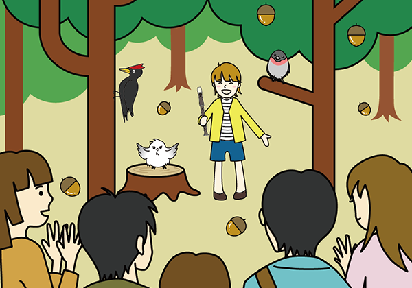

森林音樂會
橡果合唱團每個月都會舉辦一次森林音樂會，會場就在森林裡。我們覺得在藍天白雲與大自然的環境底下合唱是一件很開心的事。請大家務必來聽我們的合唱。
2016年9月11日開催 森林音樂會的樣子
感謝好天氣，也感謝很多朋友到場。最後能全體一起唱橡果滾滾滾這首歌，一起度過快樂的時光，真是太棒了！
橡果合唱團每個月都會舉辦一次森林音樂會，會場就在森林裡。我們覺得在藍天白雲與大自然的環境底下合唱是一件很開心的事。請大家務必來聽我們的合唱。
感謝好天氣，也感謝很多朋友到場。最後能全體一起唱橡果滾滾滾這首歌，一起度過快樂的時光，真是太棒了！